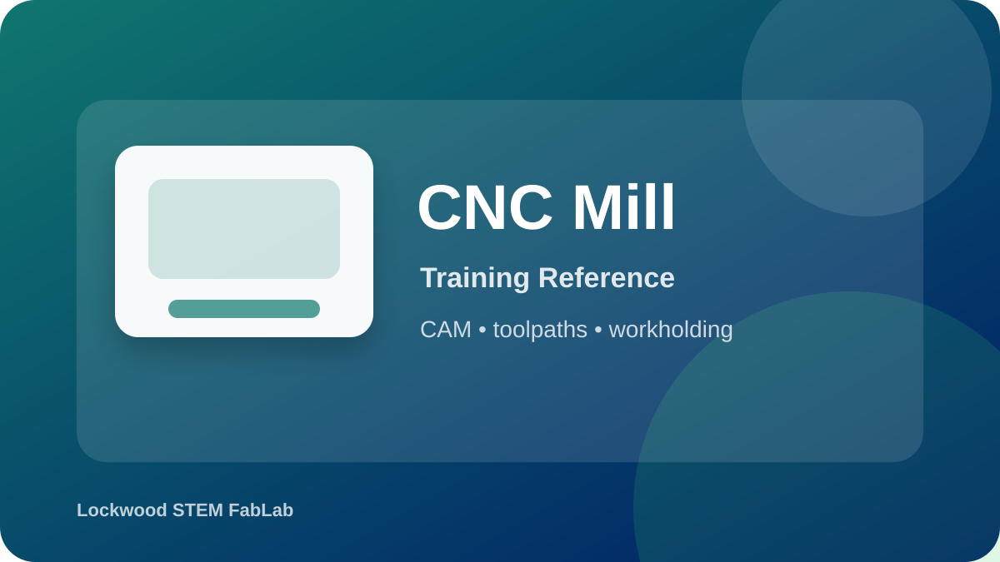

Choose the machine-specific CNC page for the DMC2 Mini, FoxAlien, or Genmitsu platform.
Use these media resources to preview the equipment and training expectations before you begin a hands-on check.

Open the tool page for the full checklist, procedure, video, and knowledge check.
Preview CNC safety and setup before opening the full CNC training page.
Open video on YouTubePreview CNC safety habits before the hands-on check.
Open video on YouTubeUse these visual references to identify the equipment and review the workflow before using the tool.
Equipment overview
Setup checkpoint
Safe cleanup
Use these videos as support before your hands-on classroom demonstration. Your teacher’s directions and FabLab safety rules always come first.
| What You Notice | Best Response |
|---|---|
| Chatter/burning | Stop; check feed/speed/workholding. |
| Stock moves | Emergency stop. |
| Toolpath near clamps | Do not run. |